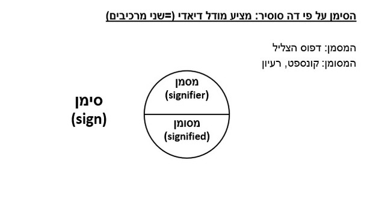
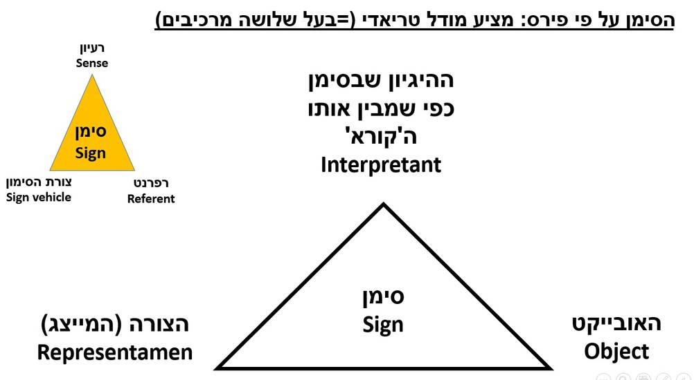
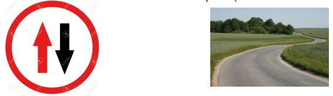
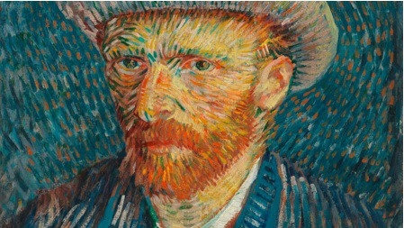

שואבת מהבלשנות וממושגי מפתח בחקר השפה; רואה במערכת הסימנים כשפה לכל דבר עם חוקיות ברורה המניעה אותם לעבר יצירת משמעות (השפה, כך דה סוסיר, היא אולי המערכת החשובה ביותר של מערכות הסימנים, ועם זאת הוא רואה בבלשנות כענף אחד בתוך מדע הסמיולוגיה).
"ניתן [...] לחשוב על מדע הבוחן את תפקידם של סימנים כחלק מהחיים החברתיים [...] נקרא לו סמיולוגיה (semiology) [מהמילה semeîon 'סימן']. במרכזו של מדע זה יתבצע מחקר סביב טבעם של סימנים והחוקים השולטים בהם" (דה סוסיר, 1983; 1974).
התייחסות לסימן לא רק כחלק משפה 'מדוברת', אלא כאל כל דבר המייצג דבר מה בעבור מישהו.י. סימנים, על כן, יכולים להיות בבחינת אותיות, מילים, תמונות, צילומים, צלילים, מחוות וחפצים וכו'; כל חיבור של משמעות וסימנים על צורותיו השונות.
גם לתפיסה של פירס ישנם כמה עקרונות מנחים (לא ניגע בכולם). אחד החשובים שבהם, למשל, הינו החלוקה שעושה פירס לסוגי סימנים (כ-60,000!), ובראשם חלוקה ראשונית ובסיסית לשלושה סימני יסוד (נשתמש לעת עתה במונחיו של דה סוסיר, מסמן ומסומן, כדי להסבירם):
הקשר בין המסמן למסומן הוא שרירותי לגמרי (אין ביניהם חיבור כלשהו במציאות). על כן יש ללמוד את משמעותו.
סימן שבו המסמן מחקה את/דומה במידת מה למסומן (מראה, ריח, צליל, ציור פורטרט).
סימן שבו ישנו קשר ישיר בין המסמן למסומן (אין עשן בלי אש; הקלטה קולית).
עוד עיקרון מעניין לתפיסתו של פירס: הסימן לפי פירס יכול להיות כל ואריאיציה שהיא של אחד מהשלושה, או אף שילוב שלהם.
ומהו, לצורך הדיון אם כן, הטקסט המצולם: האם מדובר בסימן סימבולי? אינדקסיקאלי? אייקוני?